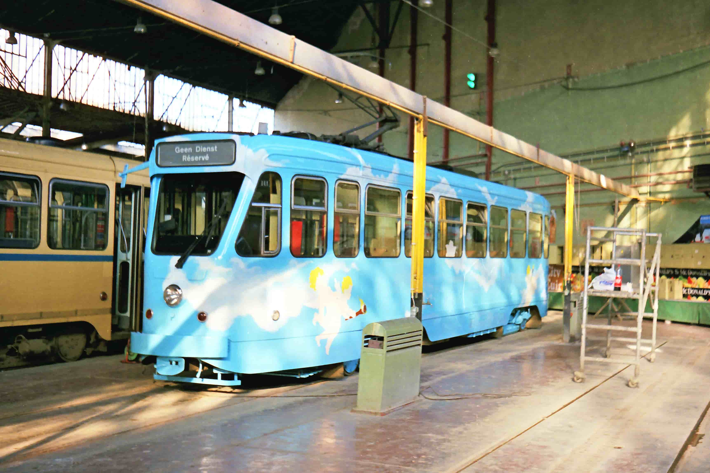
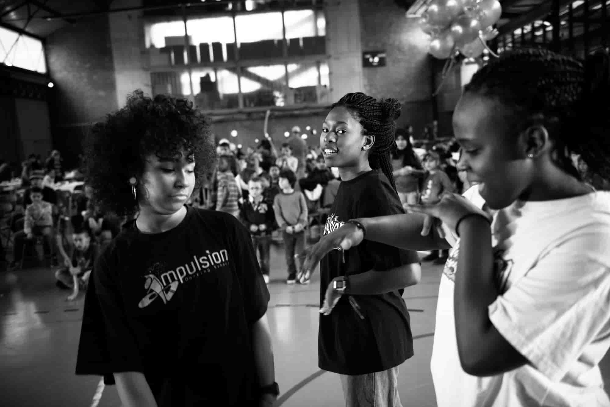
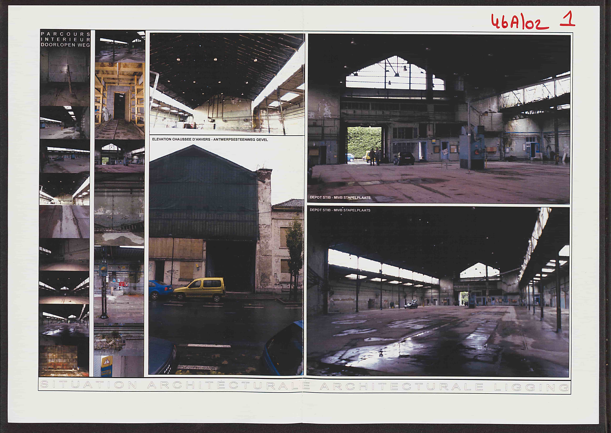
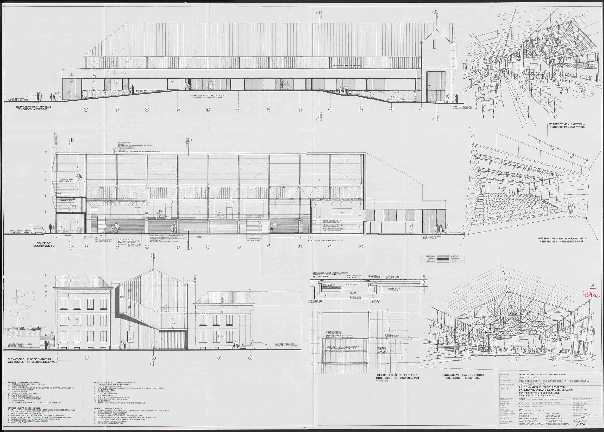
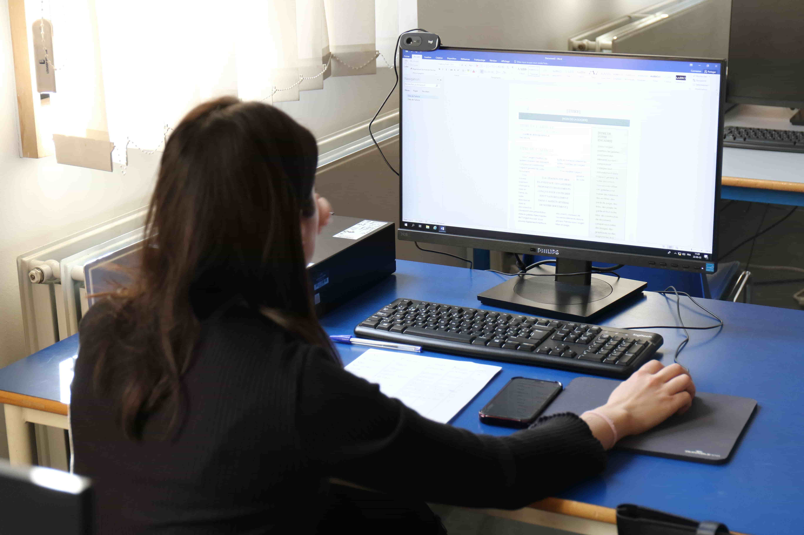
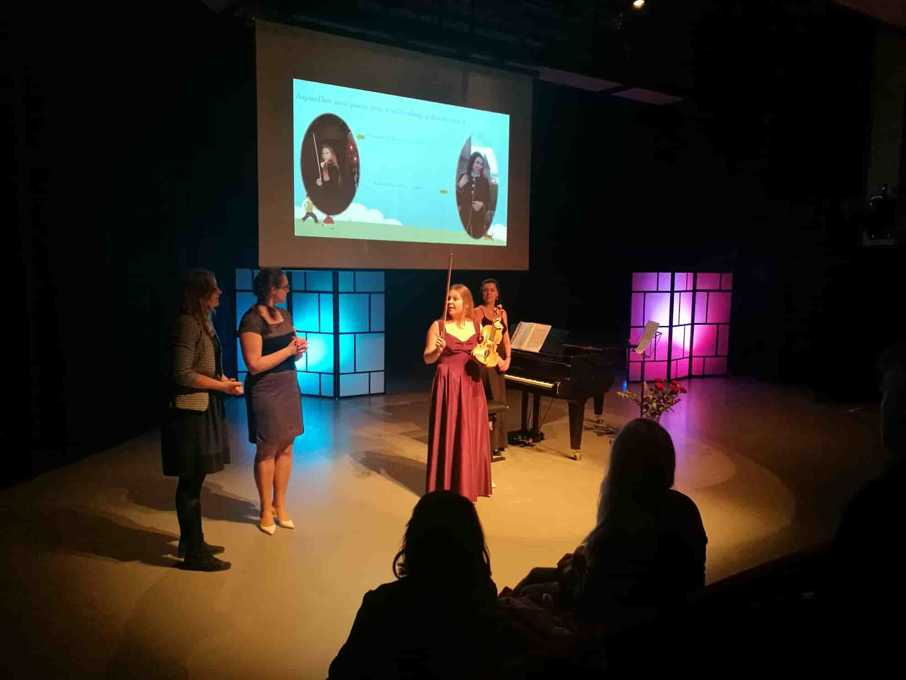
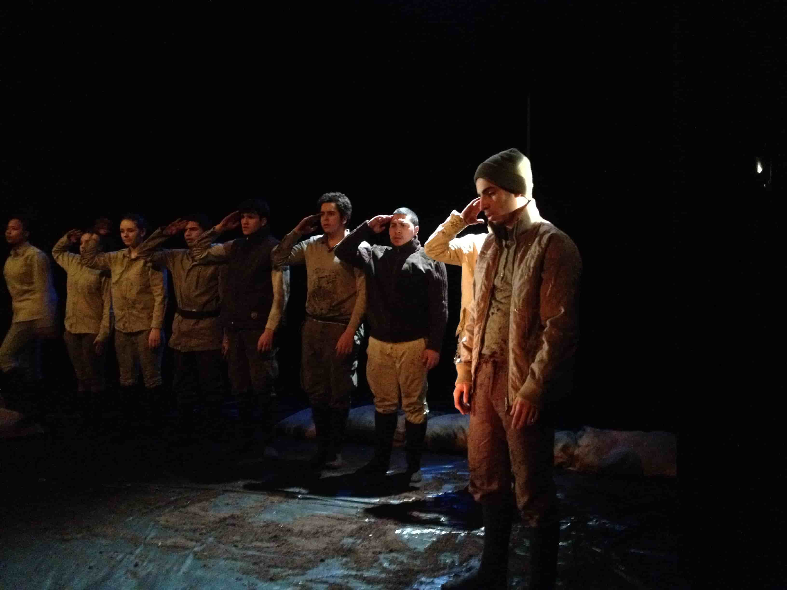
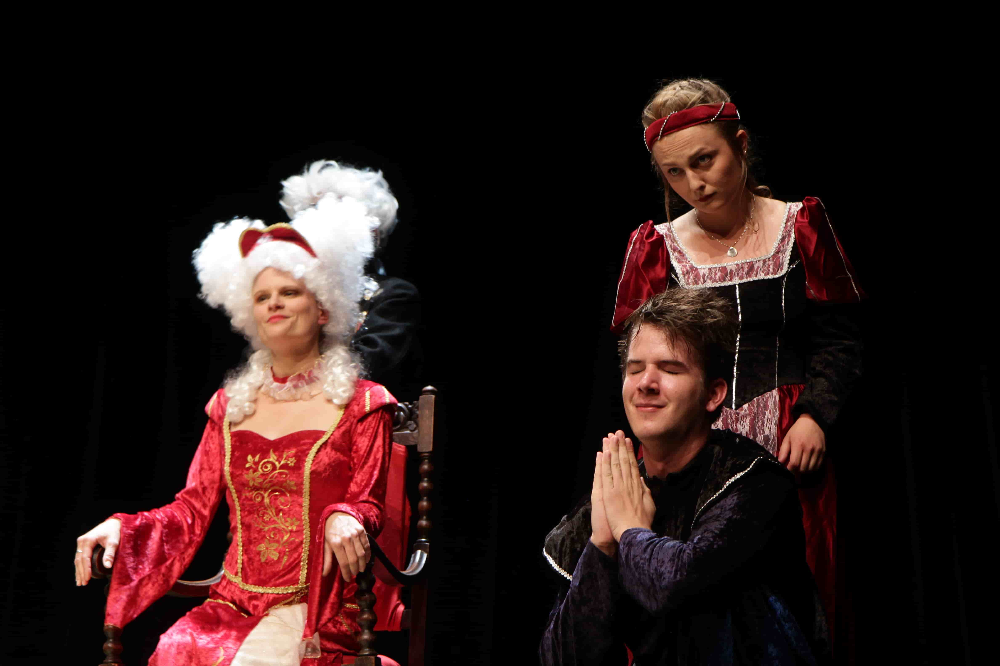
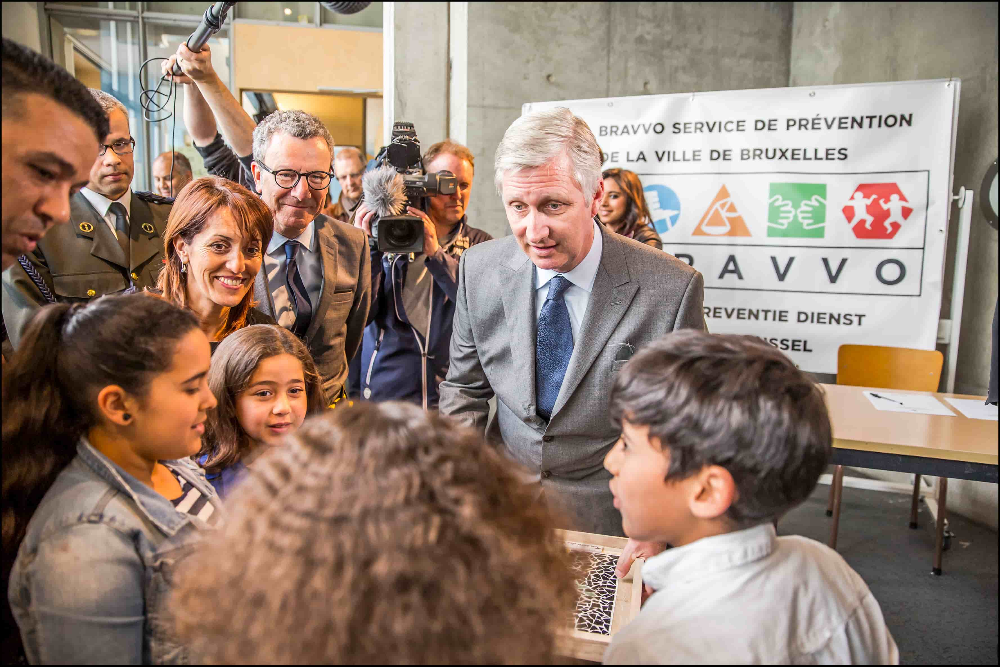

1

Peinture bleu poue une campagne publicitaire sur un tram en réparation des les ateliers de la STIB - cliché pris le 15-05-1989
2

Impulsion lors de la célébration de nos 10 ans. Cette année, ils nous accompagnent à nouveau pour célébrer nos 20 ans. Merci à eux. Retrouver les ici : https://www.impulsion-dance.be/
3

La Belgian Street Railways and Omnibus Company Limited (BSROC) disparait le 1er janvier 1875, remplacée par la Société des Tramways bruxellois (TB) qui devriendra par la suite la STIB
4

Archive de la Chaussée d'Anvers de 04-1958 à 25-06-1961
5

Atelier de réparation de la STIB en 1973.
6

Championat inter classe de hokey en salle organiser par une école dans la salle multisport du Centre Pole Nord
7

Archives d’un bâtiment laissé à l’abandon après le départ de la STIB, avant sa reprise par la Ville de Bruxelles en vue de sa rénovation.
8

Plans d’origine du bâtiment retrouvés dans les archives après plusieurs années d’abandon. Grâce à ces traces historiques et aux plans d’origine retrouvés, le bâtiment a pu être rénové dans de bonnes conditions.
9

Cette photographie ancienne nous plonge dans l’atmosphère du Rinking de Bruxelles, une vaste salle consacrée au patinage à roulettes. Au premier plan, plusieurs membres du personnel posent sur la piste.
10

210 de la Chaussée d'Anvers en 1993
11

210 de la Chaussée d'Anvers de nos jours
12

Concert d'un sosie d’Elvis Presley sur la scène de l’espace culturel de notre centre Pole Nord pour faire découvrir aux plus petits et ravir les plus grands.
13

Cours d’alphabétisation proposés aux habitants du quartier, un espace d’apprentissage, de rencontre et de partage où chacun peut progresser à son rythme.
14

Cours d’alphabétisation proposés aux habitants du quartier, un espace d’apprentissage, de rencontre et de partage où chacun peut progresser à son rythme.
15

Vue intérieure du Sporting Palace de Bruxelles : la vaste piste de patinage à roulettes du Rinking s’étend sous la haute verrière, bordée de gradins et d’espaces réservés au public. Cette photographie témoigne de l’ampleur et de l’élégance de ce lieu de loisirs autrefois très fréquenté vers 1910
16

Sur scène, une jeune comédienne d’Histoires de promesse se tient au premier plan, entourée des autres participants du Centre de jeunes Loco-Motive. Mis en scène par Sarah Jafari, le spectacle mêle théâtre, danse et musique pour faire entendre les récits et les mémoires de la deuxième génération issue de l’immigration.
17

Affiche du spectacle Histoires de promesse, créé à l’occasion des 50 ans de l’immigration turque et marocaine en Belgique. Le projet, réalisé avec les adolescents du Centre de jeunes Loco-Motive, s’appuie sur leurs récits, leurs identités et leurs histoires familiales. Écrit et mis en scène par Saïd Jaafari.
18

Spectacle de danse classique - cliché pris le 25-03-2017
19

Dans les coulisses où la magie prend forme en son et en lumière grâce à notre régisseur JP.
20

La salle d’étude du centre Pole Nord, un espace dédié au travail et à la concentration
21

DEMANDER PAUL SOURCE OU LÉGENDE date 2017
22

DEMANDER PAUL SOURCE OU LÉGENDE
23

DEMANDER PAUL SOURCE OU LÉGENDE
24

Le Roi Philippe quittant le Centre Pole Nord après sa visite
25

Un souvenir inoubliable et une grande fierté pour notre centre Pole Nord : ici le roi Philippe de Belgique échange avec les enfants lors de sa visite, Un moment privilégié qui restera gravé dans la mémoire de notre centre et de tous ceux qui ont eu la chance d’y assister.
26

Merci au public d’avoir partagé ce moment avec nous dans l’espace Culture de notre centre Pole Nord
27

Le piano prend place sur la scène de l’espace culturel de notre centre Pôle Nord, prêt à accompagner de beaux moments de partage musical.
28

source inconnus
29

Spectacle d’animation réunissant les enfants et leurs parents dans la grande salle Pôle Nord, aménagée pour accueillir des activités récréatives et familiales destinées aux Maisons des Enfants de la Ville de Bruxelles.